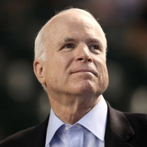

| Home Page | |
|  |
John McCainBiographyJohn McCain is a Vietnam War veteran and a six-term U.S. senator from the state of Arizona. He was the Republican nominee for the 2008 presidential election, before his loss to Barack Obama. Who Is John McCain? The son of a decorated Navy admiral, John McCain was born at the Coco Solo Naval Station in Panama on August 29, 1936. He enrolled at the U.S. Naval Academy and was dispatched to Vietnam, where he was tortured as a prisoner of war between 1967 and 1973. After his release, McCain served as a Republican congressman and senator from the state of Arizona, earning renown as a "maverick" who challenged party orthodoxy. He launched a bid for the U.S. presidency in 1999 and earned the Republican nomination in 2008, before losing to Barack Obama. After winning a sixth Senate term in 2016, McCain made headlines for his opposition to Republican attempts to repeal Obamacare and his battle with brain cancer. |
|
Navy Blood John Sidney McCain III was born on August 29, 1936, at Coco Solo Naval Air Station in the Panama Canal Zone (then a U.S. territory), the second of three children born to naval officer John S. McCain Jr. and his wife, Roberta. Both McCain's father and paternal grandfather, John S. McCain Sr., were four-star admirals, with John Jr. rising to command U.S. naval forces in the Pacific. |